本页面包含 GENESIS 项目的全套讲解与汇报材料，按深度分为三级讲解，另有 20 页 PPT 汇报和全部实验图表。
极简蓝白风格，含 LaTeX 公式和实验数据。点击可在线浏览每一页。
零公式纯直觉，先让脑子里有画面。适合第一次接触项目时阅读。
把直觉变成数学公式，带实验数据表格，建立定量理解。
完整数学推导，约束算子的理论地位分析，可直接讨论。
回应老师两大质疑：约束真的满足吗？生成质量能打赢 AE/VAE 吗？五方法横向对比 + AE/VAE 加约束三套路实测 + 忠实移植 3 个老师指定的开源仓库。
所有实验结果可视化：鲁棒性、多约束、Hu 矩、对称性、消融实验。
给定已训练的 Conditional Flow Matching 模型，能否在采样阶段加入结构约束，让样本既像真实数据，又遵守物理/结构规律？
点击图片可放大查看。
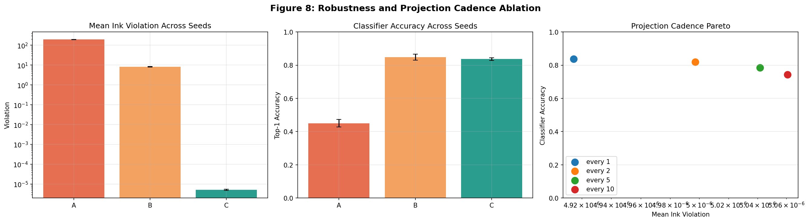
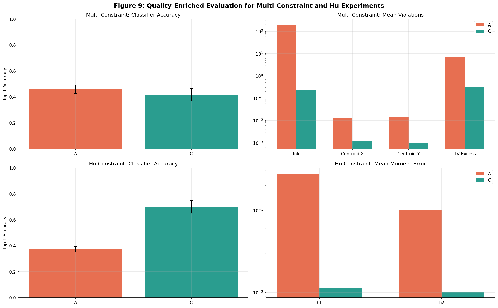
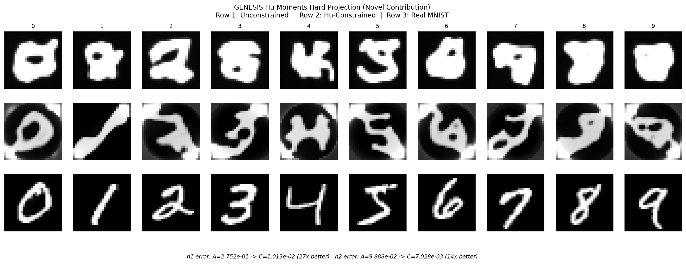
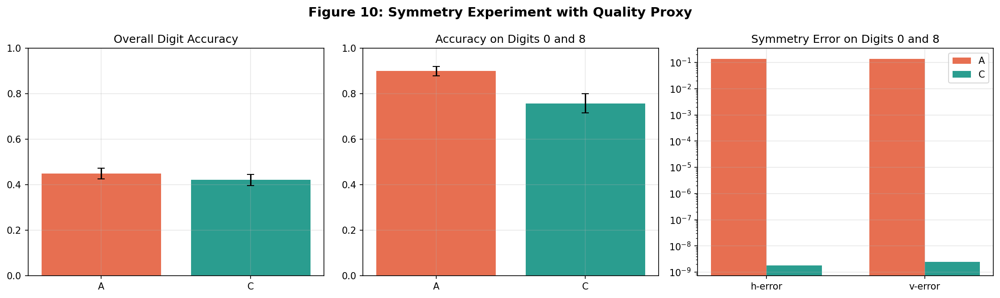
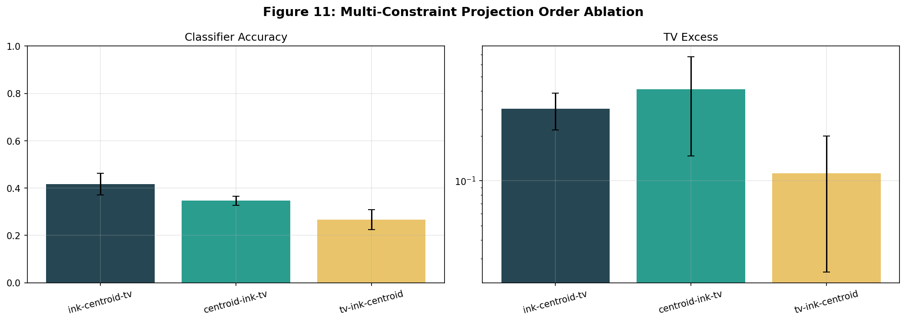
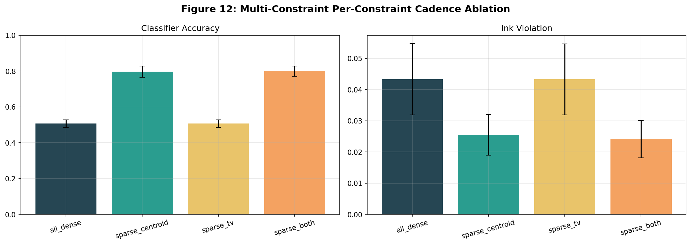
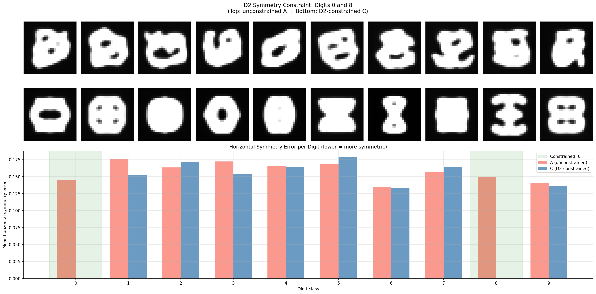
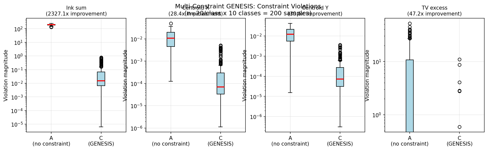
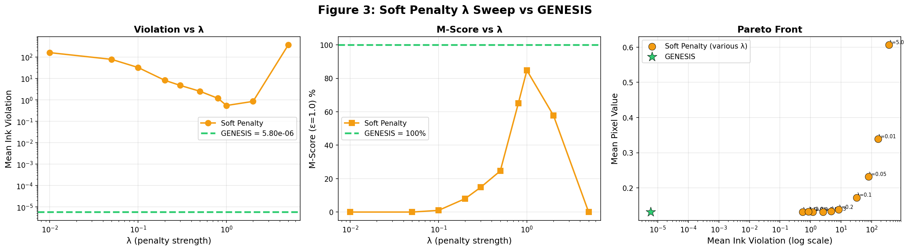
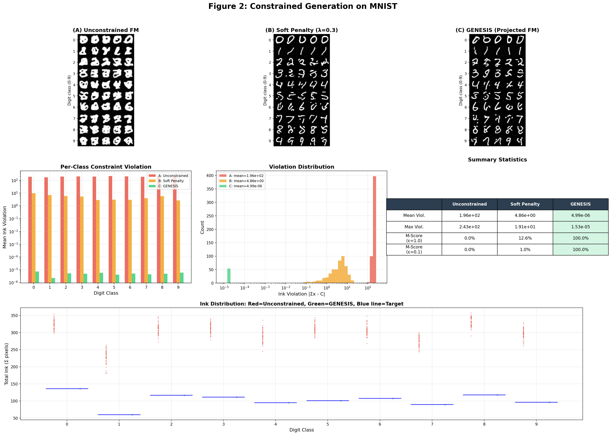
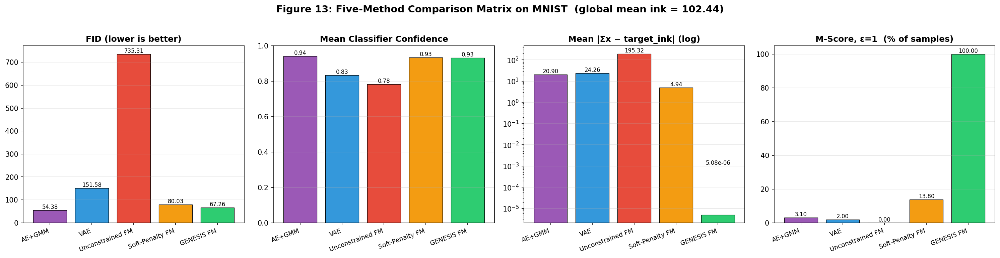
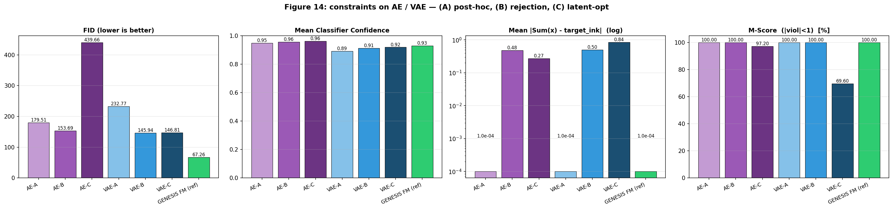
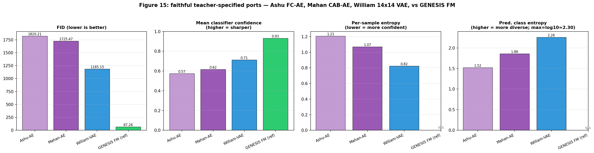